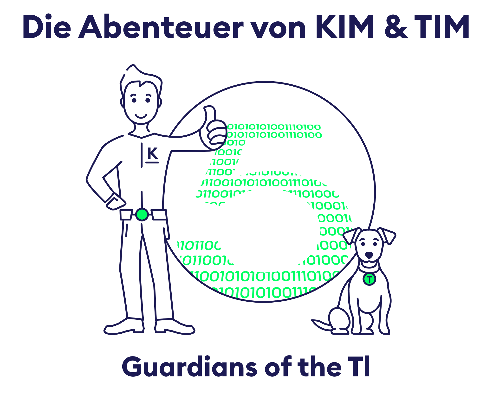

Guardians of the TI
KIM & TI-M haben es geschafft – die Drahtzieher sind identifiziert und die Angriffswelle aus Kapitel II: To TI-Mfinity and Beyond wurde gestoppt. Doch die Jagd ist noch nicht vorbei: Die TI‑Ranger bündeln ihre Kräfte an einer zentralen Anlaufstelle und steigen direkt in die Telematikinfrastruktur (TI) ein.

In unterschiedlichen Sub‑Welten erlebt ihr, wie die TI‑Produkte funktionieren und sicher zusammenspielen. Sichert gemeinsam mit den TI‑Rangern die Datenströme am TI‑Gateway, um die Angriffsfläche zu begrenzen und weitere Attacken der Drahtzieher zu vereiteln.

Die Sub‑Welten sind frei begehbar und können während des Events jederzeit besucht werden. Sammelt in jeder Welt die Codes, um am Ende die Datenströme zu bündeln.